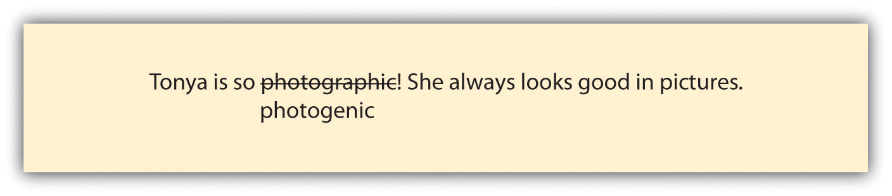
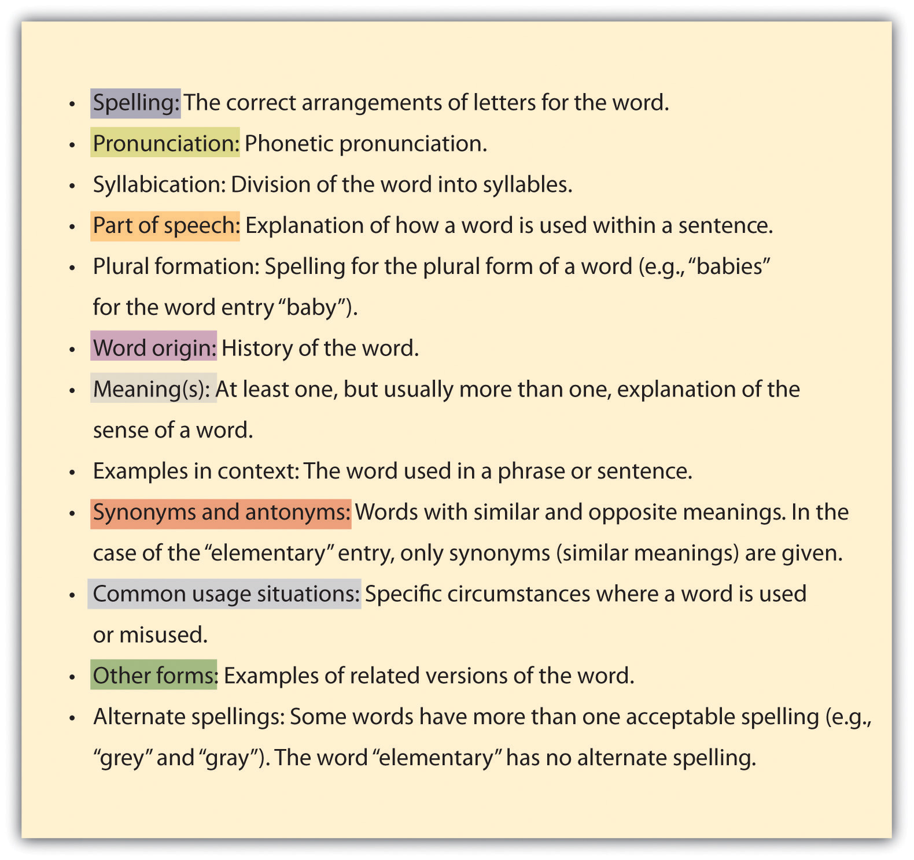
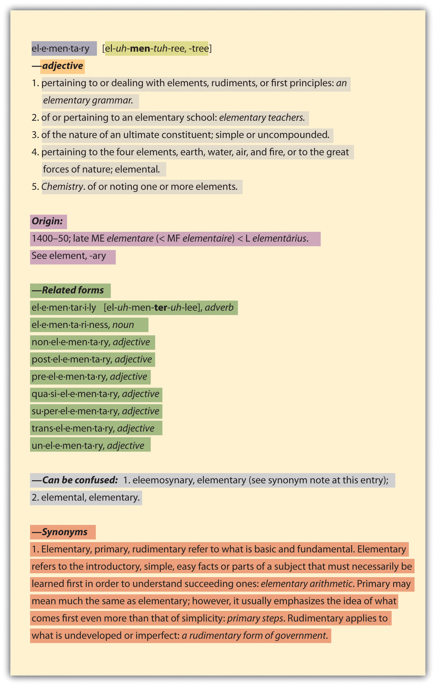
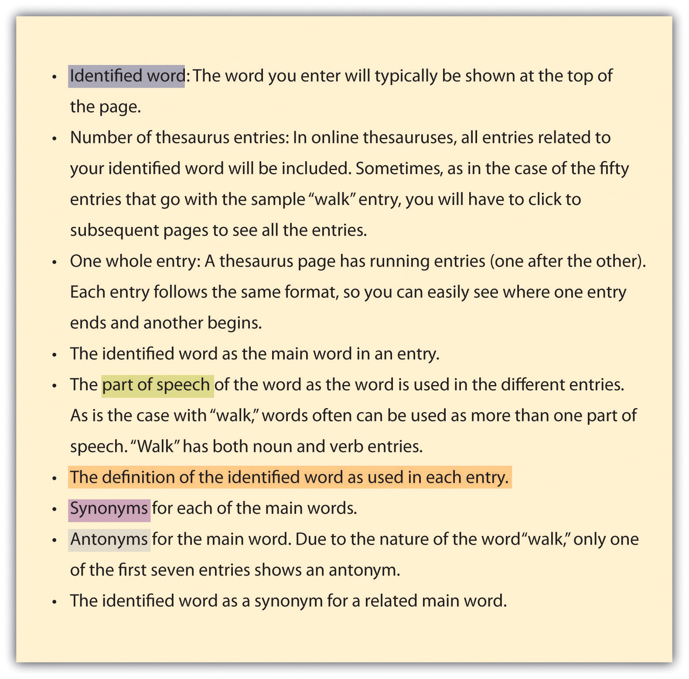
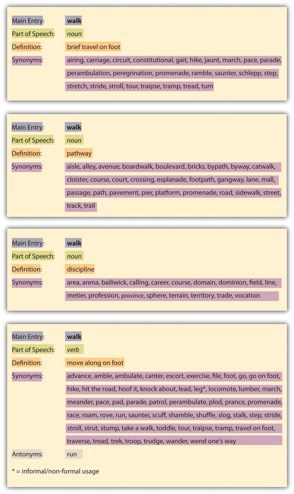

If you are going to write for either personal or professional reasons, you should carefully choose your words. Make sure your words say what you mean by controlling wordiness, using appropriate language, choosing precise wording, and using a dictionary or thesaurus effectively.
It is easy to let your sentences become cluttered with words that do not add value to what you are trying to say. You can manage cluttered sentences by eliminating repetitive ideas, removing repeated words, and rewording to eliminate unneeded words.
Unless you are providing definitions on purpose, stating one idea in two ways within a single sentence is redundant and not necessary. Read each example and think about how you could revise the sentence to remove repetitive phrasing that adds wordiness. Then study the suggested revision below each example.
Original: Use a very heavy skillet made of cast iron to bake an extra juicy meatloaf.
Revision: Use a cast iron skillet to bake a very juicy meatloaf.
Original: Joe thought to himself, “I think I’ll make caramelized grilled salmon tonight.”
Revision: Joe thought, “I think I’ll make caramelized grilled salmon tonight.”
As a general rule, you should try not to repeat a word within a sentence. Sometimes you simply need to choose a different word. But often you can actually remove repeated words. Read this example and think about how you could revise the sentence to remove a repeated word that adds wordiness. Then check out the revision below the sentence.
Original: The student who won the cooking contest is a very talented and ambitious student.
Revision: The student who won the cooking contest is very talented and ambitious.
If a sentence has words that are not necessary to carry the meaning, those words are unneeded and can be removed to reduce wordiness. Read each example and think about how you could revise the sentence to remove phrasing that adds wordiness. Then check out the suggested revisions to each sentence.
Original: Andy has the ability to make the most fabulous twice-baked potatoes.
Revision: Andy makes the most fabulous twice-baked potatoes.
Original: For his part in the cooking class group project, Malik was responsible for making the mustard reduction sauce.
Revision: Malik made the mustard reduction sauce for his cooking class group project.
Rewrite the following sentences by eliminating unneeded words.
As a writer, you do not want inappropriate word choice to get in the way of your message. For this reason, you need to strive to use language that is accurate and appropriate for the writing situation. Learn for yourself which words you tend to confuse with each other. Omit jargonVocabulary of a special group or profession. (technical words and phrases common to a specific profession or discipline) and slangPlayful, informal vocabulary, often recently invented and specific to a certain group. (invented words and phrases specific to a certain group of people), unless your audience and purpose call for such language. Avoid using outdated words and phrases, such as “dial the number.” Be straightforward in your writing rather than using euphemismsSubstitution with a gentler way of expressing something. (a gentler, but sometimes inaccurate, way of saying something). Be clear about the level of formality needed for each different piece of writing and adhere to that level.
Words in homophone sets are often mistaken for each other. (See Chapter 19 "Mechanics", Section 19.1.3 "Homophones" for more about homophones.) Table 17.1 "Commonly Confused Words" presents some examples of commonly confused words other than homophones. You will notice that some of the words in the table have similar sounds that lead to their confusion. Other words in the table are confused due to similar meanings. Keep your personal list handy as you discover pairings of words that give you trouble.
Table 17.1 Commonly Confused Words
| affect | effect | good | well | |
| all ready | already | lay | lie | |
| allusion | illusion | leave | let | |
| among | between | ordinance | ordnance | |
| are | our | precede | proceed | |
| award | reward | quiet | quite | |
| breath | breathe | quote | quotation | |
| can | may | sit | set | |
| conscience | conscious | statue | statute | |
| desert | dessert | that | which | |
| emigrate | immigrate | through | thorough | |
| especially | specially | who | whom | |
| explicit | implicit |
Jargon and slang both have their places. Using jargon is fine as long as you can safely assume your readers also know the jargon. For example, if you are a lawyer, and you are writing to others in the legal profession, using legal jargon is perfectly fine. On the other hand, if you are writing for people outside the legal profession, using legal jargon would most likely be confusing, and you should avoid it. Of course, lawyers must use legal jargon in papers they prepare for customers. However, those papers are designed to navigate within the legal system.
You are, of course, free to use slang within your personal life, but unless you happen to be writing a sociolinguistic study of slang itself, it really has no place in academic writing. Even if you are writing somewhat casual responses in an online discussion for a class, you should avoid using slang or other forms of abbreviated communication common to IM (instant messaging) and texting.
Some writers choose to control meaning with flowery or pretentious language, euphemisms, and double-talkTalk that includes extra verbiage in an effort to camouflage the message.. All these choices obscure direct communication and therefore have no place in academic writing. Study the following three examples that clarify each of these misdirection techniques.
| Technique | Example | Misdirection Involved | Straightforward Alternative |
|---|---|---|---|
| Flowery or pretentious language | Your delightful invitation arrived completely out of the blue, and I would absolutely love to attend such a significant and important event, but we already have a commitment. | The speaker seems to be trying very hard to relay serious regrets for having to refuse an invitation. But the overkill makes it sound insincere. | We are really sorry, but we have a prior commitment. I hope you have a great event. |
| Euphemisms | My father is follicly challenged. | The speaker wants to talk about his or her father’s lack of hair without having to use the word “bald.” | My father is bald. |
| Double-talk | I was unavoidably detained from arriving to the evening meeting on time because I became preoccupied with one of my colleagues after the close of the work day. | The speaker was busy with a colleague after work and is trying to explain being tardy for an evening meeting. | I’m sorry to be late to the meeting. Work ran later than usual. |
Look at the following three sentences. They all three carry roughly the same meaning. Which one is the best way to write the sentence?
If you said, “It depends,” you are right! Each version is appropriate in certain situations. Every writing situation requires you to make a judgment regarding the level of formality you want to use. Base your decision on a combination of the subject matter, the audience, and your purpose for writing. For example, if you are sending a text message to a friend about going bowling, the formality shown in example three is fine. If, on the other hand, you are sending a text message to that same friend about the death of a mutual friend, you would logically move up the formality of your tone at least to the level of example two.
By using precise wording, you can most accurately relay your thoughts. Some strategies that can help you put your thoughts into words include focusing on denotations and connotations, balancing specific and concrete words with occasionally figurative language, and being on guard against clichés and misused words.
Consider that the words “laid-back” and “lackadaisical” both mean “unhurried and slow-moving.” If someone said you were a “laid-back” student, you would likely be just fine with that comment, but if someone said you were a “lackadaisical” student, you might not like the connotationThe emotional sense of a word; the various ways in which it can be received by a listener or reader.. Nouns, verbs, adjectives, and adverbs all have both denotationsThe definition of a word. and connotations. The denotation is the definition of a word. The connotation is the emotional sense of a word. For example, look at these three words:
The three words all mean to be stirred emotionally. In fact, you might see one of the words as a definition of another one of them. And you would definitely see the three words in a common list in a thesaurus. So the denotations for the three words are about the same. But the connotations are quite different. The word “excited” often has a positive, fun underlying meaning; “agitated” carries a sense of being upset; and “flustered” suggests a person is somewhat out of control. When you are choosing a word to use, you should first think of a word based on its denotation. Then you should consider if the connotation fits your intent. For more on using a dictionary or thesaurus to enhance and add precision to your word choices, see Section 17.4 "Using the Dictionary and Thesaurus Effectively".
You will always give clearer information if you write with specific wordsA detail within a category (e.g., cat within the category animals). rather than general wordsA category (e.g., animals).. Look at the following example and think about how you could reword it using specific terms. Then check out the following revision to see one possible option.
Original: The animals got out and ruined the garden produce.
Revision: The horses got out and ruined the tomatoes and cucumbers.
Another way to make your writing clearer and more interesting is to use concrete wordsA word that evokes a physical sense such as taste, smell, hearing, sight, or touch. rather than abstract wordsA word that does not have physical properties.. Abstract words do not have physical properties. But concrete words evoke senses of taste, smell, hearing, sight, and touch. For example, you could say, “My shoe feels odd.” This statement does not give a sense of why your shoe feels odd since odd is an abstract word that doesn’t suggest any physical characteristics. Or you could say, “My shoe feels wet.” This statement gives you a sense of how your shoe feels to the touch. It also gives a sense of how your shoe might look as well as how it might smell. Look at the following example and think about how you could reword it using concrete words. Then check out the following revision to see one possible option.
Original: The horses got out and ruined the tomatoes and cucumbers.
Revision: The horses stampeded out and squished and squirted the tomatoes and cucumbers.
Study this table for some additional examples of words that provide clarity to writing.
| General Words | Specific Words |
|---|---|
| children | Tess and Abby |
| animals | dogs |
| food | cheeseburger and a salad |
| Abstract Words | Concrete Words |
|---|---|
| noise | clanging and squealing |
| success | a job I like and enough money to live comfortably |
| civility | treating others with respect |
Figurative languageA writing tool that plays on the senses, creates special effects, or both. is a general term that includes writing tools such as alliterationRepetition of single letters or sets of letters., analogiesThe comparison of familiar and unfamiliar ideas or items by showing a feature they have in common., hyperboleA greatly exaggerated point., idiomsA group of words that carries a meaning other than the actual meanings of the words., metaphorsAn overall comparison of two ideas or items by stating that one is the other., onomatopoeiaA single word that sounds like the idea it is describing., personificationAttributing human characteristics to nonhuman things., and similesUsing the word “like” or “as” to indicate that one item or idea resembles another.. By using figurative language, you can make your writing both more interesting and easier to understand.
Alliteration: Repetition of single letters or sets of letters.
Effect: Gives a poetic, flowing sound to words.
Example: Dana danced down the drive daintily.
Analogy: The comparison of familiar and unfamiliar ideas or items by showing a feature they have in common.
Effect: Makes an unfamiliar idea or item easier to understand.
Example: Writing a book is like raising a toddler. It takes all your time and attention, but you’ll enjoy every minute of it!
Hyperbole: A greatly exaggerated point.
Effect: Emphasizes the point.
Example: I must have written a thousand pages this weekend.
Idiom: A group of words that carries a meaning other than the actual meanings of the words.
Effect: A colorful way to send a message.
Example: I think this assignment will be a piece of cake.
Metaphor: An overall comparison of two ideas or items by stating that one is the other.
Effect: Adds the connotations of one compared idea to the other compared idea.
Example: This shirt is a rag.
Onomatopoeia: A single word that sounds like the idea it is describing.
Effect: A colorful way to describe an idea while adding a sense of sound.
Example: The jazz band was known for its wailing horns and clattering drums.
Personification: Attributing human characteristics to nonhuman things.
Effect: Adds depth such as humor, drama, or interest.
Example: The spatula told me that the grill was just a little too hot today.
Simile: Using the word “like” or “as” to indicate that one item or idea resembles another.
Effect: A colorful way to explain an item or idea.
Example: Hanging out with you is like eating watermelon on a summer day.
ClichésA phrase that was once an original and interesting creation but that became so often used that it has ceased to be interesting and is now viewed as overworked. are phrases that were once original and interesting creations but that became so often used that they have ceased to be interesting and are now viewed as overworked. If you have a tendency to use a cliché or see one while you are proofreading, replace it with plain language instead.
I’m loose as a goose today.
Replace cliché: I’m very relaxed today.
Table 17.2 A Few Common Clichés
| as fresh as a daisy | as slow as molasses | as white as snow |
| beat around the bush | being led down the primrose path | big as life |
| bottomless pit | busy as a bee | can’t see the forest for the trees |
| chip off the old block | dead of winter | dirt cheap |
| don’t upset the apple cart | down to earth | flat as a pancake |
| for everything there is a season | from feast to famine | go with the flow |
| gone to pot | green with envy | growing like a weed |
| heaven on earth | here’s mud in your eye | in a nutshell |
| in the doghouse | just a drop in the bucket | knock on wood |
| light as a feather | like a duck out of water | made in the shade |
| muddy the water | naked as a jaybird | nutty as a fruitcake |
| old as dirt | our neck of the woods | plain as the nose on your face |
| raking in the dough | sick as a dog | stick in the mud |
| stubborn as a mule | sweet as apple pie | thorn in my side |
| two peas in a pod | under the weather | walks on water |
| water under the bridge | when pigs fly |
If you are uncertain about the meaning of a word, look the word up before you use it. Also, if your spellchecker identifies a misspelled word, don’t automatically accept the suggested replacement word. Make an informed decision about each word you use.
Look at the Figure 17.1.
Figure 17.1
Equipment and memories can be photographic, but to look good in pictures is to be photogenic. To catch an error of this nature, you clearly have to realize the word in question is a problem. The truth is, your best chance at knowing how a wide range of words should be used is to read widely and frequently and to pay attention to words as you read.
Fill in the blank in this sentence with a word that carries a connotation suggesting Kelly was still full of energy after her twenty laps:
Kelly ____ out of the pool at the end of her twenty laps.
Identify the general word used in this sentence and replace it with a specific word:
I put my clothes somewhere and can’t find them.
Identify the abstract word used in this sentence and replace it with a concrete word:
I smelled something strong when I opened the refrigerator door.
Identify the cliché used in the following sentence and rewrite the sentence using straightforward language:
We should be up and running by ten o’clock tomorrow morning.
Identify the misused word in the following sentence and replace it with a correct word:
I’d rather walk then have to wait an hour for the bus.
Dictionaries and thesauruses provide writing assistance for writers of all levels of experience and ability. Think of them as tools that will help you to do your very best writing. A dictionary can help you determine the precise denotations of words, while a thesaurus, used responsibly, can help you to capture subtle differences in the connotations of words.
Technology is changing the face of dictionaries. A short twenty or thirty years ago, a good graduation gift for a college-bound student was a hardcover dictionary. Today very few college students even own one because online dictionaries are so readily available. Using an online dictionary, you can look up a word in the time it takes to type it, as opposed to taking the time to flip pages and scan through a page of words in a print dictionary. On the other hand, a hard-copy dictionary is still a great backup if you’re unable to get online, and it can lead to some surprising discoveries of other words on the same page, just as browsing through a shelf of library books can put you in contact with books you might not have otherwise encountered.
The important issue is that you use a dictionary of some kind and that you understand what it can provide for you. Whether you use a print or online dictionary, the entries offer a wealth of information. Figure 17.2 includes some of the most common dictionary entry components. Following the list is a color-coded entry for “elementary” (from Dictionary.com, based on the Random House Unabridged Dictionary) showing where various parts of the entry can be found:
Figure 17.2
Figure 17.3
Like dictionaries, thesauruses are available in both print and online media. And as with dictionaries, the convenience of modern technology dictates that online thesauruses are the preferred choice of most college students these days. One warning about thesauruses: they can be overused or used out of context. You might be tempted to use a “fancier” synonymA word with a meaning similar to another word. or antonymA word with the opposite meaning of another word. for a word when a simple and direct approach might be best.
Whether you use an online or hard-copy thesaurus, you will encounter the following features.
Figure 17.4
Figure 17.5 shows four color-coded entries for the word “walk” (out of fifty) at Thesaurus.com (based on Roget’s Thesaurus).
Figure 17.5
Use a dictionary to answer these questions:
Use a thesaurus to write five versions of the following sentence that mean roughly the same thing. Change at least two words in each version:
Hannah considered accepting a job with Bellefor Inc. but decided against it.